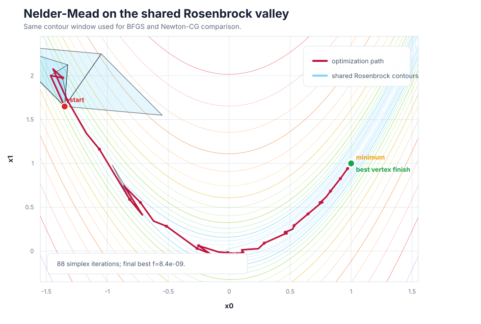
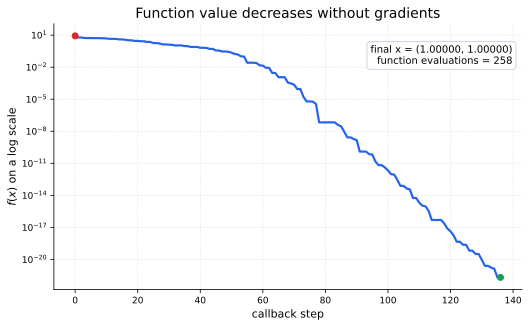

Core Idea
In \(n\) dimensions, a simplex has \(n+1\) vertices: a line segment in one dimension, a triangle in two dimensions, a tetrahedron in three dimensions, and so on. At each iteration the algorithm sorts the vertices by objective value, keeps the best region, and tries to replace the worst vertex.
The method does not estimate a derivative. That makes it robust for small black-box problems, but it can be slower than gradient-based algorithms such as BFGS once a reliable gradient is available.
Simplex Moves
Let \(x_h\) be the worst vertex, \(x_l\) the best vertex, and \(c\) the centroid of all vertices except \(x_h\):
Nelder-Mead then tests a small menu of geometric moves. A common coefficient choice is \(\alpha=1\), \(\gamma=2\), \(\rho=\frac12\), and \(\sigma=\frac12\).
Reflection asks whether the opposite side of the simplex is better. Expansion follows that direction farther when reflection is excellent. Contraction pulls the bad vertex inward when reflection fails. Shrink is the reset move: the simplex collapses around the best point.
Rosenbrock Example
The usual SciPy tutorial example is the Rosenbrock function. In two dimensions it forms a narrow curved valley whose minimum is easy to state but not always easy to reach:


Using SciPy
In SciPy, choose this method through minimize(..., method="Nelder-Mead").
It only needs the objective function.
import numpy as np
from scipy.optimize import minimize
def rosen(x):
return np.sum(100.0 * (x[1:] - x[:-1]**2.0)**2.0 + (1 - x[:-1])**2.0)
x0 = np.array([1.3, 0.7, 0.8, 1.9, 1.2])
result = minimize(
rosen,
x0,
method="Nelder-Mead",
options={"xatol": 1e-8, "disp": True},
)
print(result.x)When To Use It
| Use Nelder-Mead when | Prefer another method when |
|---|---|
| The objective is low-dimensional and gradients are unavailable, unreliable, or expensive. | The problem has many variables; simplex methods scale poorly because the geometry becomes expensive to maintain. |
| You need a simple local search baseline for a black-box function. | You can provide gradients; BFGS usually reaches smooth minima with fewer evaluations. |
| The function is mildly noisy and derivative estimates would be unstable. | You need guaranteed convergence theory on difficult nonsmooth or constrained problems. |